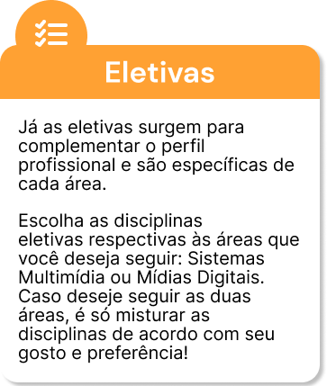
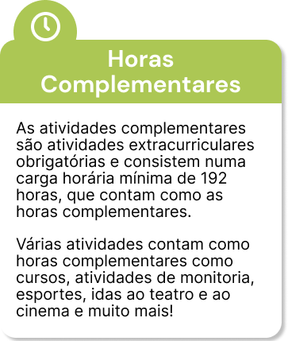

Vou Me Formar?
Como funciona a grade curricular do SMD?
No vídeo você confere sobre:
Tipos de disciplinas
Créditos e horas
Diferenças entre turnos
Diurno
Noturno
Nossa grade curricular
Passando pro lado, você vai descobrir um pouquinho mais sobre cada componente da grade curricular do SMD :)


Não caia nessa
armadilha!
Esse é um erro muito comum no SMD!
Para se formar, você precisa fazer no mínimo 4 cadeiras eletivas do quarto semestre e 3 cadeiras eletivas do quinto, exatamente nessa quantidade! Caso faça, por exemplo, cinco do quarto e duas do quinto, ainda faltará uma cadeira - uma do quinto semestre.